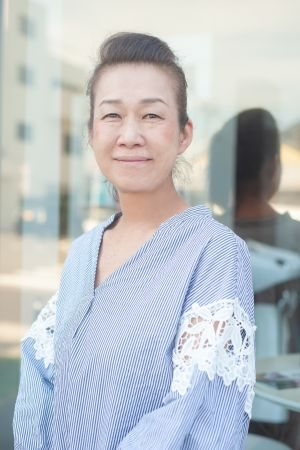
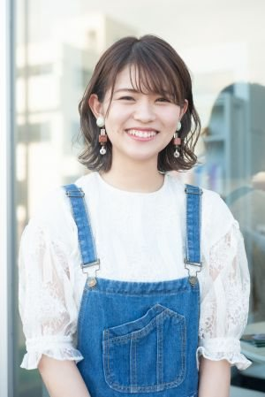
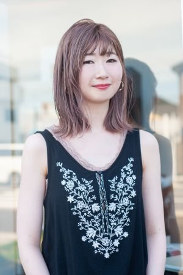

スタッフ紹介
世代を

廣上 猶造Hirokami Yuzo
当店の
| 誕生日 | 9/ |
|---|---|
| 出身地 | 高崎市 |
| 星座 | てんびん座 |
| 趣味 | ゴルフ・ |
| 保有免許 | 理容師免許・ |
| 得意な | オシャレ |

廣上 由美子Hirokami Yumiko
小さい
| 誕生日 | 10/ |
|---|---|
| 出身地 | 富岡市 |
| 星座 | てんびん座 |
| 趣味 | 美味しい |
| 保有免許 | 美容師免許・ |
| 得意な | 笑顔で |

佐藤 未倫Sato Misato
私の
| 誕生日 | 9/ |
|---|---|
| 出身地 | 高崎市 |
| 星座 | おとめ座 |
| 趣味 | 旅行です。 |
| 保有免許 | 美容師免許・ |
| 得意な | 可愛い |

小宮山 奈津己Komiyama Natsuki
美容師に
| 誕生日 | 10/ |
|---|---|
| 出身地 | 高崎市 |
| 星座 | てんびん座 |
| 趣味 | ドライブ |
| 保有免許 | 美容師免許 |
| 得意な | ショートスタイル。 |

林 まり子Hayashi Mariko
私が
| 誕生日 | 5/ |
|---|---|
| 出身地 | 渋川市 |
| 星座 | おうし座 |
| 趣味 | 孫と |
| 保有免許 | 美容師免許・ |
| 得意な | 骨格を |

狩野 沙也加Kano Sayaka
美容師に
| 誕生日 | 3/ |
|---|---|
| 出身地 | 前橋市 |
| 星座 | おひつじ座 |
| 趣味 | 美味しい |
| 保有免許 | 美容師免許 |
| 得意な | お客様の |

白石 絵理奈Shiraishi Erina
私が
| 誕生日 | 9/ |
|---|---|
| 出身地 | 高崎市 |
| 星座 | おとめ座 |
| 趣味 | 旅行 |
| 保有免許 | 美容師免許 |
| 得意な | 笑顔と |

ご予約・ご相談はお気軽に
ご予約は、